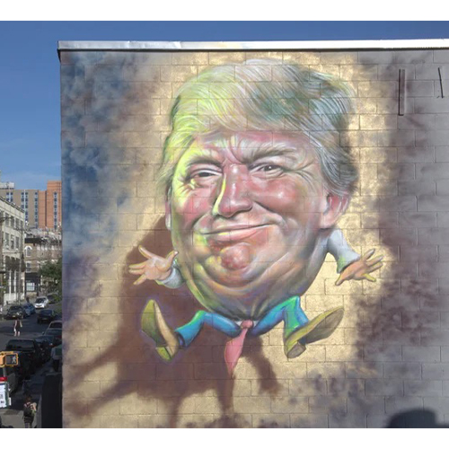

Trumpty Dumpty, 2017
Political mural painted by Ron English in Bushwick, Brooklyn, reimagining Donald Trump as Humpty Dumpty.

Work details
Description
Painted during the opening period of the Trump presidency, Trumpty Dumpty quickly became one of Ron English’s most widely circulated political murals. English recast the Humpty Dumpty nursery-rhyme figure as a Trump-like character perched precariously on a cracked wall, turning a familiar children’s image into a pointed political satire.
Installed on Troutman Street in Bushwick, the mural was widely documented in American and international street-art coverage and became one of the defining Ron English public works of 2017.